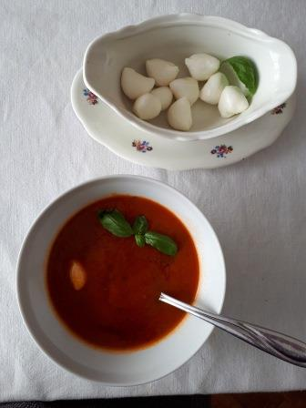

Családi finomságok
-
Fóoldal
-
Levesek
-
Főételek
-
Desszertek
-
Az étkezésről
Levesek
- Paradicsom leves
- Zöldség leves
- Zöldborsó leves
Paradicsom leves

- Recept-
- Olívaolajon pároljunk apróra vágott lilahagymát
- Dobjuk rá szeletelt sárgarépát, sózzuk, borsozzuk
- Tegyük rá az összedarabolt paradicsomot vagy öntsük fel paradicsomlével,
- Ízesíthetjük bazsalikommal, zöldségleves kockával
- Főzzük készre, pürésítsük
- Mozzarella golyóval tálaljuk
Zöldség leves

- Recept-
- Kevés vajon/olajon megpároljunk az apróra vágott zöldségeket.
- Párolás közben ízesítsük, sózzuk, borsozzuk.
Ha paprikásan készítjük, a paprikát most tegyük rá
- Öntsük fel vízzel vagy zöldség alaplével
- Főzzük addig, amíg a zöldségek megpuhulnak
- Levesbetétet/pl csurgatott tésztát/ főzünk bele
- Petrezselyemmel megszórva tálaljuk